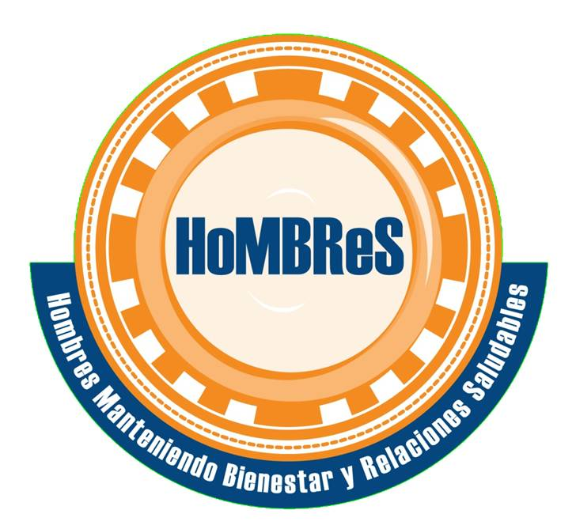
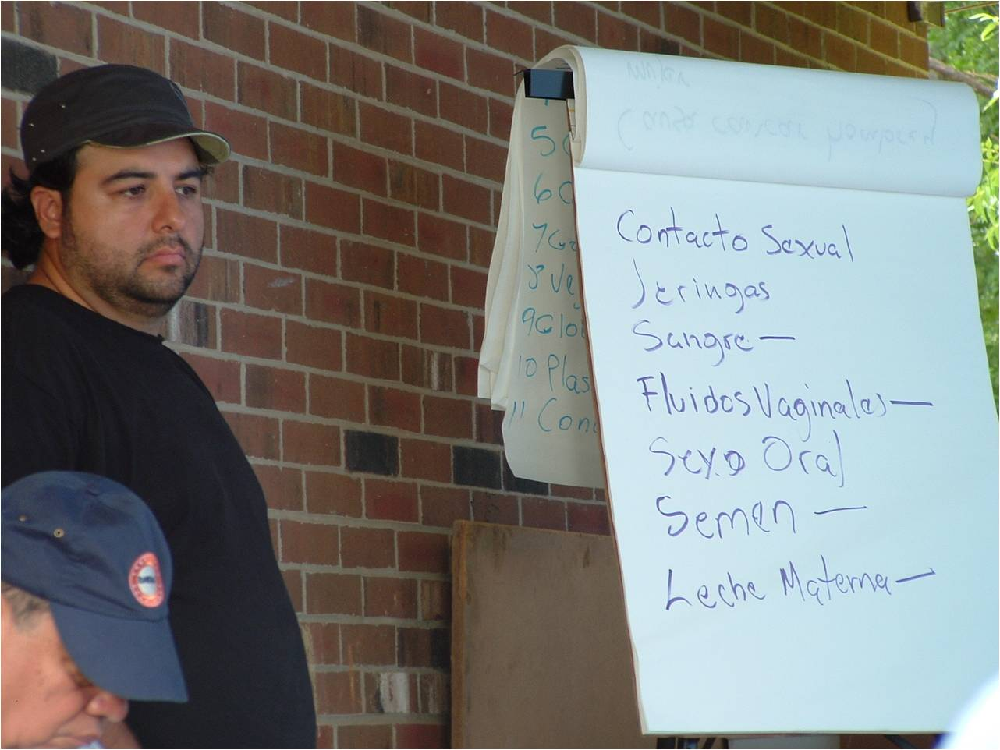

Tools Used
- Financial Incentives and Disincentives
- Norm Appeals
- Overcoming Specific Barriers
- Neighbourhood Coaches and Block Leaders
- Peer Support Groups
Initiated By
- North Carolina Community-Based Public Health Initiative
- Members of Chatham Communities in Action (CCIA)
Partners
- Local health and Latino-serving organizations, religious organizations, local public health department, academic institutions, and the North Carolina Hispanic Soccer League
- W.K. Kellogg Foundation Community Health Scholars Program
Results
- Roughly 66% of the soccer players in the intervention teams said that they used condoms consistently, compared to 41% in the control group.
- There were higher rates of self-efficacy to use condoms in the intervention teams v. the control teams (~55% v. ~37%)
- HIV testing increased from the baseline of less than 10% in both the intervention and control teams, to more than 60% and 40% in the intervention and control teams, respectively.
HoMBReS
HoMBRes—Hombres Manteniendo Bienestar y Relaciones Saludables (Men Maintaining Wellness and Healthy Relationships)—is a sexual risk reduction intervention designed to reduce HIV and STD infection among recently arrived, non-English speaking Latino men in rural central North Carolina. Developed using community–based participatory research (CBPR), HoMBReS includes the systematic selection, training, and ongoing support of Latino men to serve as lay health advisers.
Background
Note: To minimize site maintenance costs, all case studies on this site are written in the past tense, even if they are ongoing as is the case with this particular program.
The Latino community living in the United States has been disproportionately affected by the intersecting epidemics of HIV and sexually transmitted diseases (STDs). In 2005, they had the second highest rate of AIDS diagnoses of all racial and ethnic groups in the United States, accounting for 20% of the total number of new AIDS cases reported (almost four times greater than for non-Latino Whites).
Similarly, rates of reportable STDs were also higher among Latinos than among non-Latino Whites. In 2003, the rates of gonorrhea, chlamydia, and syphilis each were two to four times higher among Latinos than among non-Latino Whites. In 2004, HIV and STD infection rates for Latinos in North Carolina were three and four times that of non–Latino Whites, respectively.

Map courtesy of mapcruzin.com
Setting Objectives
The overall goal of the project was to reduce the risk of HIV and STD infection through increased condom use and increased access to counseling, testing and treatment services for HIV and STDs.
Once the formative research was finalized, partnership members developed an agreed-upon set of interrelated objectives:
- Develop and implement a lay health advisor intervention to reduce STD/HIV risk behaviours among members of the soccer league.
- Evaluate the efficacy of the intervention by comparing soccer league members in the intervention to those in the delayed-intervention comparison group using self-reported sexual risk behaviours and utilization of STD/HIV counseling, testing and treatment services.
- Evaluate the changes experienced by the lay health advisors by being trained and serving as lay health advisors.
- Assess the feasibility of engaging a soccer league in implementing a lay health advisor intervention designed to reduce STD/HIV transmissions among Latino men.
- Assess the feasibility of collecting biomarker data (i.e., urine for chlamydia and gonorrhea testing) from soccer league members, comparing those who have lay health advisors and those who do not.
Getting Informed
The North Carolina Community-Based Public Health Initiative and members of Chatham Communities in Action (CCIA) began the intervention by identifying whom they personally knew within the local Latino community. The partnership members participated in small, one-on-one meetings with community members and representatives from Latino-serving organizations to discuss CCIA, its history and goals, and community–based participatory research (CBPR).
After each meeting, these community members and representatives were asked for referrals for other names of individuals who might be important to talk to and/or bring into the CBPR partnership.
After about eight months of networking and trust building, the partnership expanded to include representatives from seven key groups: the Liga Hispana de Fútbol de North Carolina (LHFNC, or North Carolina Hispanic Soccer League); a local Latino tienda that hosted the Saturday morning LHFNC meetings; a statewide coalition to promote Mexican leadership; two large Spanish-language churches; a statewide farm worker advocacy group that was working in the area with the North Carolina Migrant Education Program; a statewide farm worker health program; and the local Latino community.
CBPR was used throughout the project to ensure that partnership members participated and shared control over all phases of the research, including identifying research questions; assessing community strengths, assets, and challenges; defining priorities; developing research and data collection methodologies; collecting, analyzing, and interpreting data; and disseminating findings and applying results to address community concerns through intervention.
Formative data was then collected in the spring and summer of 2002, including five focus groups with 50 newly-arrived Latino men.
As a result of this work, the partnership developed an HIV Prevention GRID that included existing intervention themes and strategies; target community demographics such as ages, countries of origin, and setting; theoretic foundations; and intervention objectives and corresponding activities. Supplemental materials such as the studies and interventions were also reviewed by partnership members as needed for further information, explanation, and context.
As a result of the GRID work, an ad hoc partnership subgroup drafted, adapted and revised the intervention activities.
The research process was iterative, with multiple opportunities for partnership feedback. This systematic approach was designed to ensure that the intervention was based both on the state-of-the-art intervention and prevention science and the experiences of Latino men in this region of North Carolina.
Identifying barriers
The data analysis identified several themes and barriers. These included:
- Participants’ prioritization of sexual health
- A lack of access to accurate and comprehensive HIV and STD information and resources
- High levels of risk behaviours, including inconsistent condom use, high rates of intercourse with multiple partners, wide use of the local commercial sex industry, and high rates of alcohol use prior to sexual intercourse
- Limited access to health care in the United States
- The role of hegemonic masculinity in influencing risk behavior
- Potentially effective intervention approaches to health promotion and disease prevention
- A history of anti-immigration tensions within the community
- Lack of documentation among members of the local Latino community. Some community members, including community leaders, were undocumented and these members were hesitant to participate in a process that they initially did not understand or trust.
In particular, the key barriers were identified as poor access to relevant information and to health care in general, embarrassment, and negative socio-cultural expectations about what it meant to be a man.
Targeting the audience
As noted previously, rates of AIDS and STD infections among the Latino community were higher than in most other ethnic groups within the United States. However, programs designed to reduce sexual risk among Latinos had lagged behind other prevention efforts that focused on other communities. The partnership, therefore, targeted this audience for intervention. This was later refined to Latino migrant and seasonal farm workers.
Pretesting
All activities and materials were pretested for attention, comprehension, personal relevance, credibility, and acceptability by those for whom the activities and materials were being developed.

Delivering the Program
The HoMBReS intervention relied on two main resources:
- The HoMBRes Training Manual to train the lay health officers (known as navegantes or "navigators"), and
- The HoMBRes Resource Manual for the navegantes to maintain, refer to and supplement with information over the course of the intervention.
From a total of 89 soccer teams in the LHFNC, 30 teams were selected and recruited to serve as intervention teams (15 teams) and delayed-intervention teams (the 15 control group teams).

To serve as navegantes, participants had to be 18 years or older, Latino or Hispanic, and a member of the LHFNC. Navegantes also had to have some Spanish-language literacy, to have worked as a migrant or seasonal farm worker, and to have provided informed consent.
The partnership wanted to ensure that each navegante had the support of his team with whom he would be working. During the initial meeting with each team, the project coordinator described the roles and responsibilities, and the training process. The team then nominated and ranked members to serve as their navegante.
Navegantes were then trained to provide STD/HIV prevention education and prevention information, service and resource referral to their teammates. They not only served as sources of information and referral, but as opinion leaders to change risky behavioural norms.
The HoMBReS Training Manual, which organized the training of the navegantes, was developed for the facilitator. Part 1 was a guide to effective facilitation, which included an introduction to the Manual, the logic model, directions on how the Manual was organized and how to use it, facilitation dos and don’ts, examples of real challenges that may be faced by facilitators, and techniques to handle these training challenges.
The manual also included four modules that standardized the training of the navegantes. The modules were an explicit guide to what the facilitator should say during each activity and questions to pose to the navegantes as they were being trained. By including guidelines for facilitation and explicit directions throughout the modules, the Manual served as a comprehensive guide for facilitators to use to train the navegantes
An observer was present during each training session to ensure adherence with the Manual's protocol, as well as to document group interactions; the length of each activity; reactions to the activities; questions, concerns or areas of confusion; how well the facilitators followed the Manual; and any weak or unclear sections of the Manual. An Observer’s Guide served as an outline for data collection.
Each navegante received a Resource Manual that included much of the content information included in the Training Manual. During the training, each navegante received module-specific materials to add to the Resource Manual. Each navegante was also given a black satchel in which to store his Resource Manual and risk reduction supplies (e.g., low–literacy Spanish-language and illustrated brochures, condoms, lubricant, plastic penis models).
The partnership chose a black satchel, rather than the more obvious gym bag based on navegante feedback. The navegantes thought that the satchel promoted a sense of leadership and being part of something “official” with a serious mission to accomplish. It was further suggested that the intervention-related contents of a gym bag (rather than a satchel) would quickly be replaced with soccer-associated items.
Upon completion of the training, each navegante received a graduation certificate and was compensated $50 for each training session. (Incentive)
Navegantes would then run team meetings using the HoMBRes resources. Meetings took place where the target audience already was: at the soccer facility, either before or after practice.
Team meetings would include topics such as STDs, their symptoms and treatment, distinguishing facts from misconceptions, identifying and modeling correct prevention strategies, identifying available community resources for treatment, and discussing norms and expectations.

Partnerships
The HoMBRes partnership included a variety of members from local health and Latino-serving organizations, religious organizations, the local public health department, several academic institutions, and a soccer league.
CCIA members also partnered with the W.K. Kellogg Foundation Community Health Scholars Program to recruit a bilingual postdoctoral scholar to facilitate the process of gathering formative data from Latino men on social determinants of health and to explore intervention opportunities that built on existing assets within the Latino community.
Financing the Program
HoMBRes secured initial funding from the W.K. Kellogg Foundation through the North Carolina Community-Based Public Health Initiative, members of Chatham Communities in Action. The partnership also wrote a research proposal, which was subsequently funded by the National Center for HIV, STD, and TB Prevention, at the U.S. Center for Disease Control.
Measuring Achievements
HoMBRes measured its impacts through surveys. It randomly divided the 30 teams chosen into 15 intervention and 15 control teams. Because they were randomly selected, the two groups were considered to be statistically equivalent, so any differences between them were considered to be due to the program.
HoMBRes also asked each navegante to keep an activity log detailing the types of interactions and with whom. These logs were analyzed monthly for output monitoring and reporting purposes.
A logic model was created by the partnership and refined over time as the intervention was developed and activities were defined. The logic model concept was presented to the partnership as a fluid resource that was expected to change over time as new insights were gained and the intervention unfolded.
Results
Approximately two thirds (65.6%) of the players in the intervention teams said they used condoms consistently, while only 41.3% of the players in the control teams said they did so. There were also higher rates of self-efficacy to use condoms in the treatment teams over the control teams (~55% v. ~37%).
HIV testing rates also increased. The control groups showed how much of that increase was likely due to other factors, such as other campaigns that were being run at the national and regional levels, and how much could be reasonably attributed to the HoMBReS program itself.
The baseline average for testing was less than 10% in both the intervention and control teams. Eighteen months after navegantes were trained and began running meetings, testing had increased to more than 60% in the intervention teams and to approximately 40% in the control teams.
Retention of navegantes was very high. In both the intervention and control teams, more than 80% of navegantes were retained as group leaders after the initial 18-month pilot period.
This project also showed the effectiveness of a male-centred approach to HIV and STD prevention that used trusted peers within the soccer league to provide prevention education and referral. Reviews of similar programs found that social support could have greater health effects for men than women.
Contacts
Scott Rhodes
srhodes@wakehealth.edu
Notes
Lessons Learned
Community participation
HoMBRes was designed and implemented with community participation from the outset. Research questions came from members of the partnership, and members from the soccer league were full and equal partners in the process, which contributed to its success.
Casting a wide net for partners was also a crucial approach that helped to create a foundation of awareness and support that could facilitate future efforts.
Understanding the theory
Community-based theories are intended to explain the processes involved in behavior change. Understanding the theory and integrating it with community member perspectives on the lived experiences of Latinos were crucial steps to making informed decisions about intervention strategies and activities. Discussions of health behavior theory allowed the partnership to determine collectively which theories or components of theories should underlie the intervention.
Visual tools
The partnership developed a logic model, which allowed members to visually depict the resources and processes required, and the outcomes expected. It also helped partnership members to make changes to activities or approaches as new information or feedback became available.
Selection of navegantes
The navegantes were respected by their peers because they were chosen by their team members. Each navegante was chosen based on their community reputation, good judgment and levels of care and discretion.
Simplify training materials
Implementation of the HoMBReS training suggested that simplification and clarification were needed in the activities around male gender socialization. The evaluation of the training identified the need for improved activities and more time to meaningfully understand male gender socialization and masculinity, how they affect men’s health, and how men can change the health-compromising aspects and strengthen the health-promoting aspects. Based on this feedback, revisions were made to the Training and Resource Manuals.
Documentation challenges
Some of the navegantes were undocumented and thus hesitant to provide tax information required by the federal government, local agencies and academic institutions. For example, distributing stipends to navegantes and meeting tax regulations was challenging; auditors, university attorneys and institutional review boards had to explore and interpret federal regulations and come to an agreement on what was required legally and administratively. This process required not only time, but partnership focus to advocate for what requirements were needed without jeopardizing the study, its success or ethical standards.
Consensus is important, but can slow the process
Many of the decisions made at team meetings were made outside of the general partnership discussion. Representatives of the soccer league took proposed decisions to the larger league membership for either final approval or alternative decisions through consensus. Although this approach slowed the study, it led to better decision-making that represented the interests of the Latino community rather than the individual partners.
Racial tensions
Racial tensions were felt within the general community and within the partnership throughout the project and sometimes threatened partnership stability. Although the CCIA made a commitment to Latino health, not all members made a similar commitment. The CCIA made a similar commitment to HIV and STD prevention; however, assumptions about HIV and STDs continued to exist among partnership members. Education of partnership members required ongoing maintenance and support.
This case study was written by Jay Kassirer, Sharon Boddy and Heather Bowen Ray in 2014, with funding from the Public Health Agency of Canada.